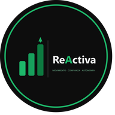

Dolor crónico que no cede
Llevas meses o incluso años con molestias que van y vienen, sin encontrar una solución real que dure en el tiempo.
Programa online basado en ejercicio físico y evidencia científica para personas con dolor lumbar persistente. Sin promesas milagrosas, con un plan real y personalizado.
ReActiva Espalda es un programa online de readaptación física para el dolor lumbar persistente, hernia discal y ciática. Basado en ejercicio progresivo con evidencia científica y dirigido por Pau Sintes, Graduado en CAFE y Máster en Actividad Física y Salud (INEFC). Disponible en modalidades de 12 o 24 semanas.
Más de 50 personas
ya han recuperado su movilidad
Condiciones que trabajamos
Como entrenador especializado en readaptación lumbar, diseño programas de ejercicio adaptados a cada diagnóstico — no tratamientos médicos ni fisioterapia.
Si llevas meses o años con dolor en la espalda y sientes que nada funciona de forma duradera, no estás solo.
Llevas meses o incluso años con molestias que van y vienen, sin encontrar una solución real que dure en el tiempo.
Justo cuando crees que mejoras, el dolor vuelve. Te has acostumbrado a vivir en ese ciclo frustrante de mejora y recaída.
Has aprendido a evitar ciertos movimientos por miedo a empeorar. Esa precaución excesiva, a veces, forma parte del problema.
Agacharte, cargar bolsas, estar sentado en el trabajo o simplemente disfrutar de un paseo se han vuelto un reto.
Has probado fisioterapia, pastillas, reposo… pero nada te da la solución definitiva que buscas. La frustración es comprensible.
Hernia, protrusión, artrosis… te han dicho muchas cosas pero no entiendes bien qué puedes hacer tú para mejorar.
No se trata de aguantar el dolor ni de hacer reposo. Se trata de moverte bien, entender tu cuerpo y recuperar la confianza progresivamente.
Analizamos tu situación, historial, limitaciones y objetivos para entender qué factores están influyendo en tu dolor.
Entender el dolor es el primer paso para superarlo. Te explicamos, con evidencia, por qué duele y qué puedes hacer.
Rutinas diseñadas específicamente para tu caso, con progresión gradual y sin exponerte a riesgos innecesarios.
No estás solo. Revisamos tu evolución, ajustamos el programa y resolvemos tus dudas de forma continua.
El objetivo final es que seas tú quien gestione tu espalda. Te damos las herramientas para mantenerte activo de por vida.
Independientemente de tu diagnóstico o tu nivel de actividad física, el ejercicio progresivo puede ayudarte.
Llevas más de 3 meses con dolor en la zona lumbar que no desaparece del todo.
Te han diagnosticado una hernia y no sabes si puedes o debes hacer ejercicio.
Tienes una protrusión discal y buscas una alternativa activa a la medicación o el reposo.
Sientes dolor, hormigueo o adormecimiento que baja por la pierna desde la zona lumbar.
Evitas actividades cotidianas por miedo a que el dolor empeore o a lesionarte más.
Practicas deporte pero el dolor lumbar te limita o te impide rendir como quisieras.
En menos de 5 minutos obtendrás una valoración personalizada sobre tu situación actual. Sin compromiso, sin coste y con información real basada en evidencia científica.
El formulario de valoración está listo
Haz clic en el botón de abajo para completarlo. Son menos de 5 minutos.

Soy Graduado en Ciencias de la Actividad Física y del Deporte por el INEFC, con un Máster en Actividad Física y Salud especializado en Rehabilitación y Readaptación de Lesiones. Llevo más de 8 años acompañando a personas con dolor lumbar persistente, hernia discal y ciática a recuperar su movilidad y calidad de vida a través del ejercicio progresivo.
Mi enfoque no es tratar síntomas de forma aislada, sino entender a la persona en su totalidad. Combino la evidencia científica más actual sobre el dolor crónico con un acompañamiento cercano y empático, porque sé que cada espalda —y cada historia— es diferente.
Creo firmemente en que el movimiento, aplicado de forma inteligente y progresiva, es la mejor medicina para la gran mayoría de casos de dolor lumbar. Mi objetivo es que dejes de depender de tratamientos externos y aprendas a gestionarlo tú mismo.
Grado en CAFE — INEFC
INEFC · Institut Nacional d'Educació Física de CatalunyaMáster en AF y Salud — Rehabilitación y Readaptación (INEFC)
INEFC · Especialización en Rehabilitación y Readaptación de LesionesMás de 8 años especializado en dolor lumbar persistente, hernia discal y ciática
Más de 8 años trabajando con personas activas y con dolor crónicoPersonas reales con historias reales. Su experiencia habla mejor que cualquier promesa.
"Llevaba 2 años con dolor lumbar constante. Gracias al programa de Pau volví a hacer senderismo, algo que pensaba que nunca podría hacer de nuevo. Por fin entiendo mi dolor en lugar de temerlo."
"Tenía miedo de moverme. Pensaba que el ejercicio empeoraría mi ciática. El enfoque de Pau es totalmente diferente: progresivo, seguro y siempre explicando el porqué de cada cosa."
"Deportista con dolor lumbar recurrente que me limitaba en el entrenamiento. Ahora tengo las herramientas para gestionarlo sola y he vuelto a competir. Pau da una atención muy personalizada."
¿Quieres empezar tú también? La valoración es gratuita y sin compromiso.
Si tienes alguna pregunta que no encuentres aquí, escríbeme sin compromiso.
El dolor lumbar persistente se define como dolor lumbar que dura más de 12 semanas. Es la primera causa de discapacidad laboral en el mundo y afecta al 20% de la población. En la mayoría de casos no tiene una causa estructural grave: la sensibilización del sistema nervioso central es el principal factor que lo mantiene.
Las guías clínicas (Lancet 2018, OMS 2023, NICE 2023) coinciden: el ejercicio progresivo supervisado e individualizado es el abordaje con mayor evidencia a largo plazo. El reposo prolongado y las terapias pasivas tienen resultados claramente inferiores. El tratamiento debe ser activo, progresivo y educativo.
En la gran mayoría de casos, sí. Con un programa de ejercicio progresivo, educación sobre el dolor y acompañamiento especializado, la mayoría de personas recuperan la función y reducen el dolor significativamente. El objetivo es recuperar la autonomía, la movilidad y la confianza para volver a hacer lo que importa.
¿Tienes alguna duda que no encuentras aquí?
Preguntar por WhatsAppInformación basada en evidencia científica, escrita por Pau Sintes (CAFE · Máster en AF y Salud, INEFC). Cada guía trata un aspecto específico del dolor lumbar crónico.
Contenido basado en evidencia
Las respuestas que tu médico no siempre tiene tiempo de darte.
Guía completa con los ejercicios que tienen mayor evidencia para el dolor lumbar persistente.
El 85-90% de las hernias mejoran sin cirugía. Descubre el protocolo con mayor evidencia.
Lo que dice la evidencia sobre el reposo — y por qué puede estar alargando tu dolor.
Cuándo sí, cuándo no, y cómo volver a correr de forma progresiva y segura.
Qué dicen los estudios sobre los estiramientos para el dolor lumbar y cuándo son útiles.
La ciencia del dolor lumbar: por qué duele y qué significa realmente esa señal de alarma.
Julio 2025 · 11 min lectura
Síntomas de raíz L5, los 5 ejercicios más eficaces y la progresión por fases para recuperarse sin cirugía.
Leer artículoJulio 2025 · 10 min lectura
No es la postura, es la inmovilidad. Las estrategias con evidencia que realmente funcionan para el dolor lumbar laboral.
Leer artículoJulio 2025 · 10 min lectura
Cuáles funcionan, cómo hacerlos bien y por qué solos no resuelven el problema a largo plazo.
Leer artículoSi quieres saber si el programa es adecuado para ti o simplemente tienes alguna pregunta, no dudes en contactarme. Respondo personalmente a todos los mensajes.